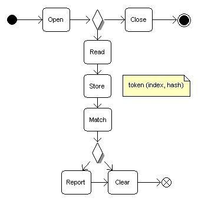
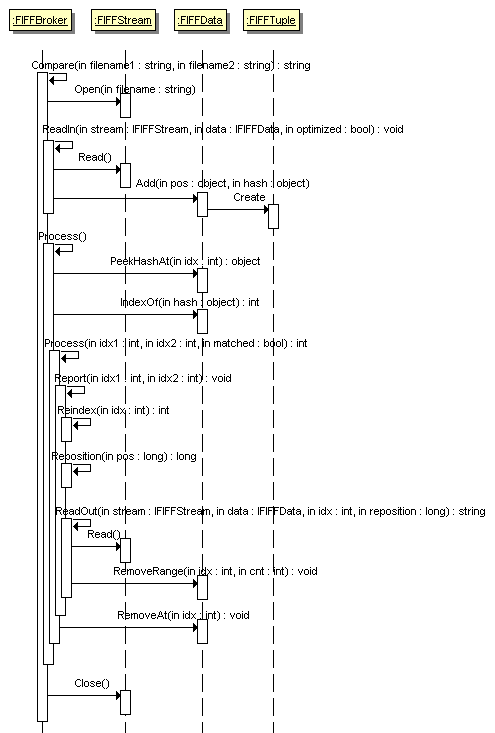

This article presents an application that calculates and displays the differences between two text files. It is written to meet the challenge in the Code Lean and Mean[^] programming competition of Code Project[^]. This entry is for the .NET (C#) category. When FIFFConsole is run with the test files included in the challenge, it completes in 109 ms (or less) and takes about 952 kB of memory on AMD 1.6 GHZ laptop with 2GB RAM. I claim that the algorithm that it implements, for most practical purposes, runs in linear time and space, O(m), where m is the number of differences between the two files.

Sample call: FIFFConsole grid1.html grid2.html 250 13
After the original publication, a request was made to extend the functionality to allow the comparison of files in a non-sequential order. For example, if the first file contains two lines and the second file contains the same two lines but in reverse order, then no differences should be reported between the files. In other words, if a token form one file exists somewhere in the body of the other file, then that token is excluded from any differences reported between the files. This feature is added in version 0.2 of the application as a scope change where the original performance metrics are unchanged or slightly improved.

Sample call: FIFFConsole grid1.html grid2.html 13 true 250
The presentation follows the mini software development life cycle (SDLC) that led to the proposed solution.
Any successful software endeavor has a set of well understood requirements. IBM has an excellent resource on Requirements: An introduction by Scott McEwen[^].
In our case, the problem domain is defined by the following needs:
These needs lead us to the following features:
The following non-features have not been considered a priority and may have been omitted completely:
These features and non-features translate to the following requirements:
System.IO.FileStream [^] for the file read interface implementation because it is sufficiently optimized System.Collections.Generic.List(T) [^] for the temporary storage interface implementation because it is sufficiently optimized System.DateTime.Now.Ticks [^] to record execution time System.Diagnostics.Stopwatch [^] to accurately measure elapsed timeSystem.Diagnostics.Process [^] to record memory usage System.Text.UTF8Encoding [^] to support both Unicode and ASCII text, UTF-8[^] In the heart of the solution is the algorithm used to calculate the text file differences. It reads chunks of data from each file until it detects a difference. Then it re-reads the same chunk, token by token. The definition of token is flexible; in some configurations, it may be a word, in others it may be a line, etc. Once the first token difference is reached, the tokens' hash codes get stored in temporary storage. The temporary storage can be an array but it can also be a hash table, B tree, etc. Reading from the files continues in this manner until a token from one file is found hashed in the other's file temporary storage. At this point the difference is finalized, the temporary storage is cleared and we continue by reading chunks of data. This algorithm is symmetric.
Alternatively, the Longest common subsequence problem (LCS)[^] provides a proven method for file comparisons. However, in my opinion, a variation of it can be used here because we deal with large files with small differences that are at a coarser granularity (line level).
Here is the pseudo-code:
open file A, B
if (hash A != hash B)
{
while not (EOF A or B)
{
if (read buffer A != read buffer B)
{
read and store token A, B (if optimized, read one token only)
while (store A or B is not empty)
{
matched = (token A or B exists in store B or A respectfully)
if (ordered and matched and (index token A in store B + index token B in store A > 0)) or (not ordered and not matched)
{
report and clear store A, B to index token B, A in store A, B
}
if (ordered and matched and (index token A in store B = index token B in store A)) or (not ordered and matched)
{
clear store A, B at index token B, A in store A, B
}
if (ordered and optimized)
{
if not matched
{
read and store token A, B (if optimized, read one token only)
}
else
{
clear store A, B
}
}
if (store A or B is empty)
{
report and clear store A, B
}
get next token A, B at index = (matched || not ordered) ? 0 : Min(index token A, B in store B, A) + 1
}
}
}
}
close file A, B
With limited knowledge of the Big-O[^] notation and computer science complex theory, I am unable to provide upper bounds for the time and space usage of the algorithm. However, here are my thoughts. The space consumption is in the temporary storage of hash codes and the time consumption is in searching it. Let n be the longest single difference between the two files as measured by the number of tokens in that difference and let m be the total number of differences. Then the algorithm runs in linear space, O(n), and completes in polynomial time, O(m*(1 + 2 + ... + n)) = O(m*n^2). The worst case scenario is when the two files are completely different. Then, provided that we tokenize by line, n = Min(k, l) where k is the number of lines in the first file and l is the number of lines in the second file, and m = 1. If, for example, we use sorted list, we can run a binary search on it in O(log n) but we would have to include O(n) time for insertion into the list. Since the frequencies of insertions and searches are the same, there is no gain in that approach. The best case scenario is when the two files are the same, n = 0, m = 0. Then the algorithm finishes in constant time and space, O(1). For most practical purposes, the max length of a difference between two files is independent of their length. In other words, it is a constant. Therefore, the algorithm runs in linear space and time, O(m), n~1!
The activity diagram below is just a visual representation of the principle behind the algorithm mentioned above. It is straightforward in terms of actions and decision points. The activity diagram helps identify the objects and operations that will be needed during implementation.
The class diagram below describes the objects that are used to implement the algorithm. Notice that since the FIFFBroker does not care about the source of the data and the kind of temporary storage that it is going to use as long as certain operations are available to it, IFIFFStream and IFIFFData are defined as interfaces. This provides easy opportunity for future optimizations. The FIFFTuple stored temporary while accumulating a difference is of two integer values in order to save space. The output formatting, reading buffer, and token delimiter are defined independently to allow for performance tuning and basic customizations.
The sequence diagram mimics the activity diagram but it helps ensure that all the objects and operations needed to complete the task at hand are identified correctly. Redundant objects and/or operations can be exposed, too.
For more details, please have a look at the uploaded source files.
try
{
FIFFBroker<FIFFStream, FIFFData> broker = new FIFFBroker<FIFFStream, FIFFData>();
Console.Write(broker.Compare(args[0], args[1]));
}
catch (Exception e)
{
Console.WriteLine("Exception: " + e.Message);
}
Stopwatch stopWatch = new Stopwatch(); // DateTime startTime = DateTime.Now;
stopWatch.Start();
// ...
stopWatch.Stop();
Console.WriteLine(stopWatch.Elapsed); //Console.WriteLine(new TimeSpan(DateTime.Now.Ticks - startTime.Ticks));
Process FIFFProcess = Process.GetCurrentProcess();
long startPeakWorkingSet64 = FIFFProcess.PeakWorkingSet64;
// ...
FIFFProcess.Refresh();
Console.WriteLine("Delta peak physical memory usage: {0}",
FIFFProcess.PeakWorkingSet64 - startPeakWorkingSet64);
// Note that because we did not create the process, we should not free it.
See also: GC.Collect Method[^].
// Put some objects in memory
// ...
Console.WriteLine("Memory used before collection: {0}", GC.GetTotalMemory(false));
// Collect all generations of memory.
GC.Collect();
Console.WriteLine("Memory used after full collection: {0}",
GC.GetTotalMemory(true));
To run FIFFConsole version 0.2, open a command prompt, browse to the directory that contains the executable, and invoke it with the following arguments:
If you want to automate the process and/or compare multiple files at once, you can write a script to select these files, invoke FIFFConsole, and store the result as needed. Here is one such script that given a file in a modified folder, finds the corresponding file (with the same filename) in an original folder, and stores the file difference in another folder. This script is written by Natasha Guigova. A version of it has been used for quality assurance (QA) regression testing.
' To run this script, use the command prompt and type: cscript /nologo .vbs
strBaseFolder = "C:\Sandbox\Test\Original"
strCurrentFolder = "C:\Sandbox\Test\Modified"
strResultFolder = "C:\Sandbox\Test"
strExeFile = "%comspec% /c C:\Sandbox\Test\FIFFConsole.exe"
Set objShell = CreateObject("WScript.Shell")
Set objFSO = CreateObject("Scripting.FileSystemObject")
Call runCompare
Function runCompare
On Error Resume Next
If objFSO.FolderExists(strResultFolder) = False Then
objFSO.CreateFolder(strResultFolder)
End If
Set objCurrentFolder = objFSO.GetFolder(strCurrentFolder)
Set colFiles = objCurrentFolder.Files
For Each objFile in colFiles
strFileBase = strBaseFolder & "\" & objFile.Name
strFileCurrent = strCurrentFolder & "\" & objFile.Name
strFileResult = strResultFolder & "\" & Replace(objFile.Name, ".html" , ".txt")
strCMD = strExeFile & " " & strFileBase & " " & strFileCurrent & " 13 true 250 > " & strFileResult
objShell.Run strCmd,0,TRUE
Next
End Function
If Err = 0 Then
MsgBox "Task Completed"
Else
MsgBox "Error Source: " & Err.Source & vbCrLf & " Error Description: " & Err.Description
End If
Set objShell = Nothing
Set objFSO = Nothing
The buffer argument makes a difference in the performance but not in the memory usage. It allows for chunks of data to be pre-scanned for differences and for the algorithm to be applied only to those chunks that differ rather than to the entire content of the files. I expect that the more differences there are, the smaller the buffer has to be. If it is bigger than the size of the file, it has no effect. For example, when the FIFFConsole version 0.1 is run for the test files included in the challenge on AMD 1.6 GHZ laptop with 2GB RAM with buffer size of:
buffer argument makes sense only in the context of ordered comparisons with optimized flag set to true. In all other cases, the files are read in completely and the algorithm is applied to the entire content of the files.


optimized flag applies to ordered comparisons and indicates whether the files are read in chunks or in their entirety. In the former case, the algorithm is applied only to partial (necessary and sufficient) data and the process takes significantly less time. The resulting differences are equivalent even though they may have slightly varying representations. For example, a deletion maybe reported as edition followed by deletion when there is a repeating token present in both files such as <TR vAlign=top> as in the test files.

The delimiterchar argument is a stub at tuning. It is used to define tokens. Tokens are used to calculate difference. When the delimiterchar is whitespace, we deal with words. The caveat being that it does not deal well with punctuation. 'Text' and 'Text,' will be considered different tokens. Using whitespace as a token delimiter is not recommended in the case of HTML or XML files because '<h3>Revision </h3> ' will be tokenized as '<h3>Revision' and '</h3>'. Despite the char associated with the delimiterchar, tokens are never bigger than a line. It is possible to define smarter logic for tokenizing the text but it is outside of the scope of this challenge.
Based on the output, the file contents can be restored. The output includes information for the position in file 1, the diff in file 1, and the diff in file 2. Thus,
Consider the following text examples and how they compare:
There are several easy ways in which the proposed implementation can be extended:
IFIFFStream interface for objects other than files The algorithm and the implementation described in this article are designed to be lean, mean, scalable, and extensible. I will be glad to get your comments.
GC.Collect() (thanks to Luc Pattyn)